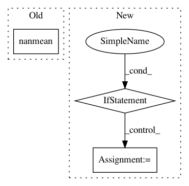

14124ebc79621009018907a2f0564b52b557ba92,scanpy/tools/score_genes.py,,score_genes,#Any#Any#Any#Any#Any#Any#Any#Any#Any#,11
Before Change
elif len(gene_list) == 1:
score = _adata[:, gene_list].X - np.nanmean(_adata[:, control_genes].X.toarray(), axis=1)
else:
score = np.nanmean(_adata[:, gene_list].X.toarray(), axis=1) - np.nanmean(_adata[:, control_genes].X.toarray(), axis=1)
adata.obs[score_name] = pd.Series(np.array(score).ravel(), index=adata.obs_names)
logg.info(" finished", time=True, end=" " if settings.verbosity > 2 else "\n")
After Change
X_list = _adata[:, gene_list].X
if issparse(X_list): X_list = X_list.toarray()
X_control = _adata[:, control_genes].X
if issparse(X_control): X_control = X_control.toarray()
X_control = np.nanmean(X_control, axis=1)
In pattern: SUPERPATTERN
Frequency: 3
Non-data size: 3
Instances
Project Name: theislab/scanpy
Commit Name: 14124ebc79621009018907a2f0564b52b557ba92
Time: 2018-12-09
Author: f.alex.wolf@gmx.de
File Name: scanpy/tools/score_genes.py
Class Name:
Method Name: score_genes
Project Name: dPys/PyNets
Commit Name: 9885acac4edf3034b1b6e2335c61dd80d7abe8f9
Time: 2018-11-06
Author: dpisner@utexas.edu
File Name: pynets/utils.py
Class Name:
Method Name: collect_pandas_df_make
Project Name: jfkirk/tensorrec
Commit Name: 3d1aa2b3c76ff596b0e6d89263ac740c29ced44e
Time: 2018-03-03
Author: james.f.kirk@gmail.com
File Name: tensorrec/eval.py
Class Name:
Method Name: ndcg_at_k